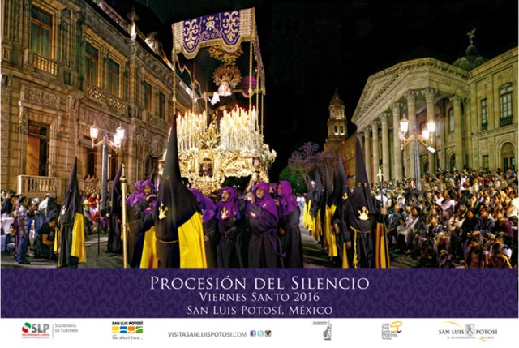

Semana Santa, Conocida como semana mayor, es un período de 7 días que comienza con el Domingo de Ramos y culmina con el Domingo de Resurrección. Con la Semana Santa, el cristiano conmemora el Triduo Pascual, es decir, los momentos de la Pasión, la Muerte y la Resurrección de Jesucristo.

La última semana de la cuaresma, desde el Domingo de Ramos hasta el Domingo de Resurrección, que la iglesia católica dedica a recordar la pasión, muerte y resurrección de Jesús.
Semana Santa, es el tiempo para dedicarse a la oración y reflexionar en Jesucristo, en los momentos del Triduo Pascual, quien con su infinita misericordia, decide tomar el lugar del hombre y recibir el castigo para liberarlo de los pecados. Asimismo, es el tiempo ideal para el ser humano meditar sobre sus acciones y los cambios que debe realizar para acercarse más a Dios y cumplir con sus mandamientos.

La semana santa la celebran los:
Cristianos Evangelicos
Para los miembros de la iglesia cristiana evangélica, la Semana Santa es el tiempo para recordar la muerte de Cristo. Para conmemorarla, se congregan en una jornada de oración y adoración, la cual inicia el Jueves Santo a las 9:00 de la noche y se extiende por 24 horas.

En esta reunión se dan cita grupos artísticos y musicales, ya que los cristianos creen que “Dios habita en medio de la alabanza”. Además, para ellos es fundamental la vigilia, es decir, pasar una noche en vela y adorando a Dios.
Con panderos, música y cantos, recuerdan la muerte de Jesucristo. La jornada de adoración comienza el jueves en la noche y termina el viernes. En estas 24 horas, la comunidad cristiana ora por los enfermos y por las necesidades de cada una de las personas que habitan en este mundo.
Testigos de jehova

Los Testigos de Jehová celebran la Vigilia Pascual el día 14 de Nisán, según la fecha de los judíos, que este año cae el viernes 6 de abril, pero los judíos lo celebran el día anterior, así que tampoco llegan a coincidir con la celebración de los judíos. Esta secta, que no son cristianos, aunque se hacen pasar por cristianos, muchas veces, y según zonas, para facilitar la reunión la celebran el domingo, que este año de 2012 será el día 8 de abril. Los cristianos católicos celebramos la Vigilia Pascual la noche del sábado 7 al domingo 8, porque buscamos la fecha del sábado al domingo tras el día de luna llena, del mes lunar del pueblo de Israel, mes de Nisán, para celebrar el domingo la resurrección de Cristo, al despuntar el día.
Catolicos
Para vivir la Semana Santa, debemos darle a Dios el primer lugar y participar en toda la riqueza de las celebraciones propias de este tiempo litúrgico. A la Semana Santa se le llamaba en un principio “La Gran Semana”. Ahora se le llama Semana Santa o Semana Mayor y a sus días se les dice días santos. Esta semana comienza con el Domingo de Ramos y termina con el Domingo de Pascua. Vivir la Semana Santa es acompañar a Jesús con nuestra oración, sacrificios y el arrepentimiento de nuestros pecados. Asistir al Sacramento de la Penitencia en estos días para morir al pecado y resucitar con Cristo el día de Pascua.

" “Es una labor que la iglesia debe apoyar, porque es un acto penitencial el que ellos hacen y para ello se preparan. Creo que es una ofrenda agradable al señor porque es un sacrificio de reconciliación con Dios, pidiéndole perdón por sus pecados y ofreciéndole este acto penitenciario”, señaló el párroco. Finalmente invitó a todos los feligreses a participar de estas actividades que con el paso de los años, asegura, se han ido perdiendo. “Los programas tienen ese fin, en todas las parroquias se hacen celebraciones litúrgicas y los templos están totalmente destinados para eso, el gobierno federal los reconoce como espacios peligrosos”.


La celebración de Semana Santa es para los poblanos una de las conmemoraciones más importantes del año cristiano; durante estos días aquellas personas que profesan alguna de las diferentes confesiones de la fe cristiana acuden a las iglesias más emblemáticas de Puebla para recordar la Pasión, Muerte y Resurrección de Jesús de Nazaret.
Una de los actos mas significativos durante la semana santa es la tradicional Procesión de Viernes santo, misma que este 2016 cumple 25 años y que es considerada de las mas grandes del país.
En Iztapalapa tiene lugar una ceremonia, fiesta y representación de la Pasión, que no responde ni a una narración sacra, ni a un teatro tradicional: es una expresión de múltiples aportaciones que se funde en una particular sincretización.
Los misioneros utilizaron el teatro para catequizar a los antiguos mexicanos y desterrar así las prácticas religiosas anteriores. Las escenificaciones de la Pasión, conmovían profundamente a los espectadores; así, el teatro de los evangelizadores actuó en favor de la cristianización. Del pasado llegan las voces que amalgaman en el presente una forma particular de sincretismo, dondelas viejas costumbres, los componentes internos y externos del drama, se llenan de nuevos contenidos sin desalojar completamente a las anteriores.

Esta temporada, la ciudad de San Luis Potosí y sus alrededores te aguardan con numerosos atractivos para que vivas días llenos de tradición, pero también de alegría y diversión.
A tan sólo 25 km de San Luis Potosí, rumbo a Zacatecas, se localiza Mexquitic de Carmona, un pueblo más antiguo que la capital misma, el cual sirvió como punto de avanzada para el descubrimiento de las minas de plata que dieron fama a toda esta región del Gran Tunal. Su principal atractivo, prácticamente inadvertido por los no potosinos, es una presa donde se realizan paseos en lancha, deportes acuáticos y pesca. Ahora bien, para el conocedor, el Museo-Zoológico José Villet ofrece una interesante oportunidad de apreciar objetos relativos a las ciencias naturales, un magro acuario y una notable colección de animales de diversas partes del país y del mundo; y aún más, para el buscador de maravillas, la parroquia de San Miguel resulta una pequeña joyita digna de admirarse a detalle. Originalmente de un convento franciscano del siglo XVI, el altar de la iglesia posee un asombroso retablo de 1630, de estilo churrigueresco con filigrana.
Uno de los atractivos turísticos más importantes que tiene el estado de Guerrero es la celebración de la Semana Santa en Taxco, ceremonia litúrgica conmovedora e impresionante, única en toda la República Mexicana. Parte fundamental en su desarrollo lo constituyen las dramáticas procesiones donde las imágenes religiosas son acompañadas, a lo largo de las empedradas calles de la ciudad, por cofradías de penitentes encapuchados, vestidos de negro y arrastrando cadenas que llevan sujetas a sus tobillos.

Dentro de la gama de festejos religiosos para los Oaxaqueños la cuaresma y la Semana Santa reviste gran significado.
El Primer Viernes de Cuaresma la Festividad del Señor de Las Misericordias en el Templo de San Juan de Dios, el Segundo Viernes de Cuaresma la Festividad del Señor de Las Maravillas en el Templo de La Defensa , el Cuarto Viernes de Cuaresma la Festividad de la Samaritana en la Ciudad de Oaxaca, el Quinto Viernes de Cuaresma la festividad del Señor de las Peñas en el Templo del Carmen Alto y la Festividad del Señor San Lázaro en la Villa de San Antonino Castillo Velasco.